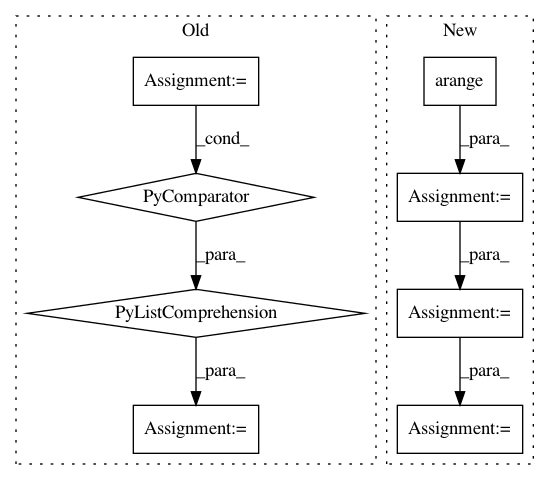

b127d30a0a0a3d3d7ad94dd629d2e673b6477cc8,scipy/spatial/_spherical_voronoi.py,SphericalVoronoi,_calc_vertices_regions,#SphericalVoronoi#,264
Before Change
)
// calculate regions from triangulation
self.regions = [[k for k in range(0, len(self._tri.simplices))
if n in self._tri.simplices[k]]
for n in range(0, len(self.points))]
def sort_vertices_of_regions(self):
For each region in regions, it sorts the indices of the Voronoi
After Change
)
// calculate regions from triangulation
generator_indices = np.arange(self.points.shape[0])
filter_tuple = np.where((np.expand_dims(self._tri.simplices
, -1) == generator_indices).any(axis=1))
list_tuples_associations = zip(filter_tuple[1],
filter_tuple[0])
list_tuples_associations = sorted(list_tuples_associations,
key = lambda t: t[0])
//group by generator indices to produce
//unsorted regions in nested list
groups = []
for k, g in itertools.groupby(list_tuples_associations,
lambda t : t[0]):
groups.append([element[1] for element in list(g)])
self.regions = groups
def sort_vertices_of_regions(self):
In pattern: SUPERPATTERN
Frequency: 3
Non-data size: 8
Instances
Project Name: scipy/scipy
Commit Name: b127d30a0a0a3d3d7ad94dd629d2e673b6477cc8
Time: 2016-02-16
Author: tyler.je.reddy@gmail.com
File Name: scipy/spatial/_spherical_voronoi.py
Class Name: SphericalVoronoi
Method Name: _calc_vertices_regions
Project Name: astorfi/TensorFlow-World
Commit Name: 874382bfb96b92dcfdd6326ba83c54ad1e9d42f2
Time: 2017-06-26
Author: amirsina.torfi@gmail.com
File Name: codes/2-basics_in_machine_learning/linear_regression/code/linear_regression.py
Class Name:
Method Name:
Project Name: arraiy/torchgeometry
Commit Name: 7f0eb809f1509c452d85000fd002b12c22e358ca
Time: 2019-08-22
Author: ducha.aiki@gmail.com
File Name: kornia/filters/kernels.py
Class Name:
Method Name: gaussian